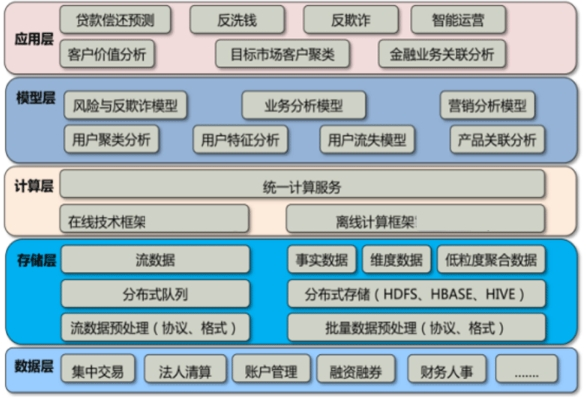

方案概述
SOLUTION OVERVIEW
进入 21 世纪，中国金融业对信息化工作前所未有的重视，众多金融机构都建立起了自己的数据平台，形成了金融机构网络和垂直业务体系，实现了金融数据大集中。这些数据有四个特点。第一个特点是数据量大，一般达到 PB 级。第二个特点是类型多，如非结构化数据、半结构化数据、流数据等。第三个特点是价值密度低，有用的数据含量少。 第四个特点是处理速度快，要求系统在短时间内做出响应。 这都是大数据的典型特点，而在金融行业，对数据存储要求非常高，特别是在像中国人口很多的国家来说，每天都会产生大量的交易数据，包括银行、证券、保险等各个金融领域都会产生大量的数据。这些数据都会存放在交易系统当中，如何处理每天产生的大数据，进行科学的分析处理，挖掘隐藏在数据内部各种有价值的关联，并及时提供决策支持，成为摆在金融业面前的新课题。
传统的 BI 处理手段，深度上有限制。例如数据分析，希望细化到每笔交易的查询、分析，对于数据的处理计算能力和计算的深度、广度要求都非常高，原有数据分析速度限制等原因做不到。而大数据的优势是能够针对最底层的交易数据进行全面的模式识别、分析，使得整个风险分析能力和效率大大提升。 在盈利方面，通过对用户的分类和信用能力分析，可以改善用户服务，也能大大提升金融机构的盈利水平。 在运营效率方面，对金融公司来说，很多都是跨全国的大型公司，它的分支机构，整个公司运营效率也是具有大量价值，可以降低成本，可以使整个金融机构在后台上及时得到稳定、平稳的支持。我们可以用大数据手段，把金融机构在分于各个系统当中的运营数据进行汇总、交叉分析使得整个运营效益进行大大的提升。
基于金融很多业务系统都已经构建，包括 BI、信息分析，这些仍然可以在大数据平台上继续实施，而且比传统方法更有效率。不仅可以降低数据整合工作量，把这些相对昂贵的工作放到更有效、更高效、性价比更高的大数据 Hadoop 上来进行，可以更大程度上降低原来对于基于主机昂贵的独立系统要求，同样使数据可以运行在基于英特尔 X86 平台上，提高效率降低成本。
方案架构
SOLUTION ARCHITECTURE
金融行业大数据总体系统架构分为五层, 分别是数据层，存储层，计算层，模型层, 应用层。模型层是整个大数据的核心部分，为上层应用提供数据支撑。

针对金融行业大数据分析的特点, 引入大数据平台架构，实现对海量的银行数据、证券数据、保险数据的自动化、高能效、虚拟化和标准化的存储和管理，保证金融行业海量交易数据的安全性、可靠性和高效的运营。
方案优势
SOLUTION ADVANTAGE
3xData金融大数据解决方案在数据分析、数据管理、数据处理、数据可视化等重要技术上具有优势：
1. 数据分析技术：包括数据挖掘、机器学习等人工智能技术，主要应用在用户信用分析，用户聚类分析，用户特征分析，产品关联分析，营销分析等方面。由于金融系统安全性、稳定性和实时性要求比较高，也大数据计算处理能力也要求非常高。3xData金融大数据解决方案内置自主开发的函数模型库，除包含常用的统计分析算法外，还内置了多种常用数据挖掘算法及分析模型。插件式的函数模型库，可劢态增加新算法模型。同时，还提供行业分析模型及类似 BI 的分析和展示工具。
2.数据管理技术：包括关系型和非关系型数据管理技术、数据融合和集成技术、数据抽取技术、数据清洗和转换等技术。 金融行业对数据的实时处理能力要求非常高，3xData金融大数据解决方案内置 ETL 服务子系统与 ETL 配置工具，支持从文件，DB、数据流中导入数据。 灵活的进行数据转换配置和任务配置。
3.数据处理技术：包括分布式计算技术、内存计算技术、流处理技术。金融数据的海量增长使得企业需要通过新型数据处理技术来更有效的利用软硬件资源，在降低 IT 投入、维护成本和物理能耗的同时，为金融大数据的发展提供更为稳定、强大的数据处理能力。
4.数据展现技术：包括可视化技术、历史流展示技术、空间信息流展示技术等。主要用于金融产品健康度监视，产品发展趋势监视，客户价值监视，反洗钱反欺诈预警等方面。金融数据种类多样，相关统计指标复杂，需要大力发展数据展现技术，提高金融数据的直观性和可视性，从而提升金融数据的可利用价值。彩讯金融大数据解决方案自助分析工具包含报表工具和分析工具。自定义报表工具，实现了基于 XML 的定义文件来可编程性地生成报表的能力。 围绕着报表引擎，开发用户图形界面，用户可以使用向导，无需编程，通过工具配置一步接一步完成创建一个报表。数据展示格式灵活，能更大程度上满足用户的数据需求。多维分析工具，提供丰富的图形化展现界面和接口。 用 java语言开发支持 MDX（多维表达式）的查询语言 、分析型XML 和 olap4j 的接口技术规范。实现了从 SQL 和其它数据源读取数据，在内存缓冲区中生成集合数据。
方案价值
SOLUTION ARCHITECTURE
金融行业当前面临着跨行业数据共享的问题与挑战。3xData金融行业大数据解决方案能全面整合金融数据，充分发挥出金融大数据的价值，在客户深度分析，市场新业务开发，传统业务运营方面，具有高性价比，易于管理和扩展等特性，效果显著，为运营商理解客户金融需求，把金融需求转化成金融产品，促建业务快速稳健的发展。
3xData互联网大数据解决方案包含Hadoop 分布式计算框架、Spark内存计算框架和Streaming 流计算框架，同时集成了 hive、 hbase 等成熟组件。